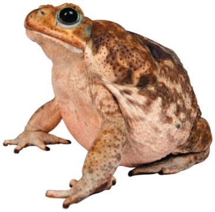
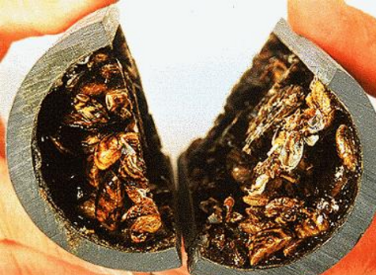

3.5 When Conditions Change
Robert Paine cut one thread on purpose, on twenty metres of rock, with a control plot alongside. This chapter is about the threads that get cut by accident — by a public-health programme, by a shipping container, by a man who thought the island needed rabbits — and about the question HS-LS2-6 actually asks: when an ecosystem is knocked over, does it get back up as the same ecosystem?
Borneo, 1950s
The Dayak people of Sarawak and North Borneo were dying of malaria. The parasite is carried by Anopheles mosquitoes, and in the early 1950s the World Health Organization ran a programme that had worked elsewhere: spray the inside of the longhouses with DDT, an insecticide that stays active on a surface for months.
It worked. Mosquito numbers collapsed and malaria cases fell sharply. Judged against its own objective the programme was a success, and it is worth being clear that a great many people are alive because of it.
Then the roofs started falling in.
This is a trophic cascade: a change at one level of a food web that propagates through the levels below or above it, altering populations that were never touched directly. You met the idea in Chapter 3.4 when you pulled a thread and watched the effects spread two steps. Here it runs five, and comes back to the people who started it.
Notice what made this cascade possible. Not that DDT is unusually dangerous — but that it did not affect every species equally. It killed the small parasitic wasps more readily than the caterpillars they controlled, and it concentrated in the animals that ate poisoned insects. An intervention that hit everything equally would have caused far less trouble. Selective effects are what turn an action into a cascade.
Build the cascade, then judge it
Walk the chain one link at a time, committing to each prediction before it is revealed. Then do the part that matters more: decide how good the evidence for each piece of the story actually is.
Trophic cascade builder: Operation Cat Drop
InteractiveTwo warnings you should carry away from this, because the story is retold far more often than it was measured.
The cats. A cat drop did happen — the RAF delivered cats to Bario in the Kelabit Highlands of Borneo in March 1960, and the crews themselves called it Operation Cat Drop. The number usually quoted, 14,000 cats, is not supported by any primary source; the documented delivery was of the order of twenty animals. If you use the big number in an answer you are repeating something nobody ever counted.
The chain. The wasp-and-caterpillar link was reported at the time by entomologists working in Sarawak and the mechanism is straightforward. The gecko-to-cat link is consistent with everything known about how DDT behaves, and was reported by people who were there — but it was never set up as a controlled study with measured tissue concentrations at each trophic level. It is a reconstruction, and an honest answer describes it as one.
None of that makes the case study worthless. It makes it a rare thing: a genuinely useful example that also teaches you to check where a claim came from. Your learning target says evaluate and critique established scientific claims, evidence and reasoning. This is what that looks like in practice.
Why the poison ended up in the cats
The step in that chain most people get wrong is the geckos, so it is worth doing properly.
DDT dissolves in fat and not in water. An animal's main route for getting rid of a toxin is to dissolve it in water and excrete it in urine — and that route is closed. So every contaminated insect a gecko eats adds a little more DDT to its fat, and none of it comes out. This is bioaccumulation: a substance building up inside one organism over its lifetime.
Now stack that on top of the ten-per-cent rule from Figure 3.14. To build one kilogram of gecko takes roughly ten kilograms of insects — and all the DDT from all ten kilograms stays in the gecko. Do it again at the next level, and the cat that eats ten kilograms of gecko receives a hundred kilograms' worth of insect DDT. The concentration multiplies at every step up the chain. That is biomagnification.
Two consequences, and they generalise far beyond Borneo:
Top predators are hit hardest by pollution, even when the dose in the environment is far too small to harm anything at the bottom. It is why DDT nearly wiped out peregrine falcons, bald eagles and ospreys in North America — it thinned their eggshells — while doing little visible harm to the insects it was sprayed on.
The poison steers itself into the predator. The cats did not eat random geckos. They caught the slow ones, and the slow ones were slow because they were poisoned. A predator preferentially harvests exactly the individuals carrying the highest dose.
Bioaccumulation and biomagnification are different words and both are examinable. Bioaccumulation is build-up within one organism over time. Biomagnification is the increase in concentration from one trophic level to the next. Bioaccumulation is what makes biomagnification possible.
Species in the wrong place
Borneo's cascade started with a chemical. The other common way to knock an ecosystem over is to add a species to it.
An invasive species is an organism introduced into a habitat where it is not native — usually by human action — which then establishes itself at the expense of the native community. Two words in that definition do work: introduced, meaning it did not get there by itself, and at the expense of, meaning that merely being new is not enough. Most introduced species fail. A few do not, and the reasons are consistent.
- No natural enemies. The predators, parasites and diseases that regulated it back home did not come with it. Look at what that means in the language of Chapter 3.2: the density-dependent factors that used to hold it near K are simply absent, so it grows exponentially — the J-curve, with nothing to bend it.
- Fast reproduction. High birth rate, early maturity, many offspring. A population that can double in a season outruns any attempt to control it.
- Generalist diet and broad tolerance. Eating almost anything, and surviving a wide range of temperature and salinity, means very little limits where it can go.
- Native species have no defence. Prey that evolved without this predator have no recognition of it, no avoidance behaviour, and no resistance to its toxins.

The cane toad is the clearest case of the fourth reason on that list. The bulges behind its eyes are glands full of a toxin that stops a vertebrate heart. Australian predators — quolls, goannas, freshwater crocodiles, snakes — had never encountered anything like it, so they ate the toads and died. Populations of northern quolls collapsed by more than 90% along the invasion front.
The same story, four ways:
| Species | Introduced | Why it succeeded | Effect |
|---|---|---|---|
| European rabbit, Australia | 24 released for hunting in 1859 | No predators; breeds continuously; eats almost any vegetation | Spread across the continent within 60 years; grazed native plants to bare soil, causing erosion and driving small marsupials out |
| Zebra mussel, North America | Ballast water from the Black Sea, 1980s | Each female releases up to a million eggs a year; larvae drift; attaches to any hard surface | Filters plankton out of the water, starving native fish; blocks water intake pipes at enormous cost |
| Lionfish, western Atlantic | Aquarium releases off Florida, 1980s–90s | Venomous spines mean nothing eats it; eats any small fish; matures in under a year | Reef fish numbers cut sharply; native predators do not recognise it as prey or as a threat |
| Burmese python, Florida | Escaped and released pets | Large, long-lived, generalist predator; the Everglades climate suits it | Sharp declines in raccoons, opossums, bobcats and marsh rabbits in the areas it occupies |

Apply the model. A lionfish population off the Bahamas was estimated at about 20 fish in 2004, with a growth rate high enough to add more than its own number each year, and a carrying capacity for the reef of about 500. Run those numbers through the logistic model from Chapter 3.2 and the population reaches roughly 42 in 2005, 87 in 2006, 169 in 2007 and 298 in 2008 — then slows as it approaches 500.
Two things to take from that. First, the curve is an S, not a J: even an invasive species eventually meets a ceiling. Second, look at where the numbers are large enough to be alarming — 2007 onwards — and notice that in 2004 there were twenty fish and nobody was worried. By the time an invasion is visible it is usually past the steep part of the curve. That is Chapter 3.1's bottle, in salt water.
The Serengeti: a virus that changed the trees
The Borneo cascade ran downwards from a poison. This one runs upwards from a disease, and it is the best-evidenced cascade in the unit because people were counting the whole way through.
Rinderpest is a viral disease of cattle and wild hoofed animals. It reached Africa in the 1880s and devastated both. In the Serengeti it killed wildebeest calves in enormous numbers, year after year, for decades. A programme to vaccinate domestic cattle — not wildebeest — began in the 1950s.
Work through what the graph shows, because your guide asks for exactly this:
- The wildebeest trend. About 190,000 animals in 1958, climbing steeply through the 1960s and 1970s to roughly 1.4 million by 1977, then levelling off and fluctuating around 1.2 million for the next quarter-century. That is a textbook logistic curve, and the plateau is the new carrying capacity.
- The rinderpest trend. Around 60% of animals infected at the start of the record, falling to zero by the mid-1960s — a few years after cattle vaccination began.
- Why vaccinating cattle helped wildebeest. The cattle were the reservoir. The virus persisted in domestic herds and spilled over into wildlife. Remove it from the reservoir and it cannot be maintained in the wild population either. Nobody vaccinated a single wildebeest.
- What was limiting the wildebeest before 1960? Disease — and disease is density-dependent, because a virus spreads more easily through a crowded herd. That is why the population sat at a low, stable level rather than growing.
- What limits them now? Food. The plateau near 1.2 million is set by how much grass the Serengeti grows in the dry season, which is also density-dependent — but which varies with rainfall, a density-independent factor. That is the "complex balance" from Chapter 3.2, visible in the wobble along the top of the curve.
Then the part that makes this famous. Researchers followed what all those extra wildebeest did.
More wildebeest ate more grass. Grass, once dry, is what carries a wildfire — so with the grass eaten down, the annual dry-season fires became far less frequent and far less intense. And fire is what had been killing tree seedlings before they could grow big enough to survive it. Fewer fires, more trees. Tree cover across the Serengeti increased measurably.
Follow the chain in one sentence: a vaccine given to cattle in the 1950s changed the number of trees in a national park forty years later. No step in that is mysterious, and every step is a density-dependent relationship of exactly the kind you have been drawing since Chapter 3.4. But nobody would have predicted it, and nobody did — it was found by measuring.
Rinderpest was declared globally eradicated in 2011, only the second virus ever wiped out after smallpox. That is a public-health triumph. It is also, permanently, an ecological intervention.
Recovered, or different?
Here is the argument the whole standard is built on, and it is the hardest idea in the unit.
HS-LS2-6 says that complex interactions in ecosystems maintain relatively consistent numbers and types of organisms in stable conditions — but that changing conditions may result in a new ecosystem. Both halves matter, and the second half is the one people skip.
The first half is what you have been building all unit. Density-dependent factors are negative feedback. Push a population up and competition, disease and predation push it back down; push it down and those pressures ease and it recovers. That web of feedbacks is what makes an ecosystem look stable — not because nothing is happening, but because a great deal is happening and it cancels out.
The second half is what happens when the feedbacks themselves are changed. Compare three cases you now know well:
| Disturbance | What happened after | Same ecosystem? |
|---|---|---|
| Humpback whaling stopped in 1986 | Population back to about 92% of its pre-whaling size by 2019 | Recovered. The conditions the whales needed — krill, breeding grounds, ocean — were still there. Remove the pressure and the old equilibrium returns. |
| Rinderpest eradicated | Wildebeest up sevenfold, grass down, fire down, tree cover up | New. The Serengeti did not return to a previous state — the 1890s Serengeti had rinderpest in it. It settled into a different stable configuration, with different numbers of different things. |
| Reindeer on St Matthew Island | Lichen mat destroyed; herd from 6,000 to 42, then extinct by the 1980s | New. The lichen that was the carrying capacity takes many decades to regrow. The island after the crash could support fewer reindeer than the island before it. |
The question to ask is not "how big was the disturbance?" but "did it change the conditions, or only the numbers?"
A hurricane can kill most of a forest and leave the soil, the seed bank and the climate intact — huge damage, no change in conditions, and the forest comes back. An invasive grass that burns every three years can look like nothing at all and permanently change the fire regime, so the forest never comes back. Size is not the test.
This is why an invasive species is such a serious problem, and why "it is only one species" is a bad argument. Adding a lionfish to a reef does not just add a lionfish. It adds a predator the prey do not recognise, which changes the mortality rate of a dozen species, which changes what grazes the algae, which changes whether coral can settle. The conditions have changed, and what grows back may not be a reef.
Check your understanding
- Explain, using the ten-per-cent rule, why a top predator can be poisoned by a chemical present at a harmless concentration in the environment.
- Distinguish bioaccumulation from biomagnification, and say why the first is necessary for the second.
- List four characteristics that make an invasive species successful. For each one, name the density-dependent factor it escapes or exploits.
- The rabbits released in Australia in 1859 grew exponentially for decades. Using Chapter 3.2, explain what was missing that would normally have bent that curve into an S.
- Vaccinating cattle changed tree cover in the Serengeti. Set out that chain step by step, giving the sign (positive or negative) of each link, and identify which link is density-dependent.
- Evaluate this claim: "An ecosystem that is disturbed will always return to how it was, given enough time." Use two of the three cases in the table above, and be specific about conditions rather than damage.
- The Operation Cat Drop story is widely retold with the figure "14,000 cats". Explain what is wrong with that number, and what a scientist should do with a striking statistic they cannot trace to a source.
Quick check
Why did DDT spraying set off a cascade, when an insecticide that killed every insect equally might have caused far less trouble?
Selective effects are what turn an action into a cascade. Knock everything down by the same amount and the relationships between species survive; knock down one species' controller and you have changed the shape of the web, not just thinned it.
A health ministry is choosing between two insecticides for a rice-growing district. One behaves like DDT; the other knocks every arthropod in the paddy down by about the same amount. Why is the second far less likely to set off a cascade?
A cascade is a change in the shape of a web, not in its size. Thin everything at once and each species still faces the controllers it had before; take away one species' controller and you have handed it a release that nothing corrects.
The Operation Cat Drop story is usually retold with the figure "14,000 cats". How should you handle that number in an answer?
A cat drop did happen: the RAF delivered cats to Bario in March 1960, and the crews named the operation themselves. The gecko-to-cat chain is a reconstruction — consistent with everything known about how DDT behaves, reported by people who were there, but never set up as a controlled study with measured tissue concentrations. Saying so is not a weaker answer. It is the answer the learning target asks for.
Two links in the Borneo chain — wasps to caterpillars, and geckos to cats — do not rest on evidence of the same quality. How should the gecko-to-cat link be described in an answer?
Grading your own evidence is part of an answer, not an apology for it. A reconstruction built on a well-understood mechanism and first-hand reports is worth far more than a guess and far less than a controlled study — naming which one you are holding is what evaluating a claim means.
DDT was at a harmless concentration on the insects it was sprayed on, yet it killed cats several steps up the chain. Why?
Stack it on the ten-per-cent rule: ten kilograms of insects makes one kilogram of gecko, and all the DDT stays in the gecko. Do it again and the cat receives a hundred kilograms' worth of insect DDT. It is why DDT nearly wiped out peregrines and bald eagles while doing little visible harm to the insects it was sprayed on.
Suppose the Borneo programme had used an insecticide that dissolves in water rather than fat, sprayed at the same dose. What would you expect to happen to the cats?
Bioaccumulation is what makes biomagnification possible. Give an animal a working exit route — dissolve the substance in water and excrete it — and nothing accumulates within one organism, so there is nothing for the level above to multiply.
Introduced populations often grow along a J-curve for years. Which explanation fits what you learned in Chapter 3.2?
Say it in the language of Chapter 3.2 and it stops being a list to memorise: the density-dependent factors that bend a J into an S are simply absent. Note the second lesson buried in the lionfish numbers — 20 animals in 2004 and nobody was worried. By the time an invasion is visible it is usually past the steep part of the curve.
The Bahamas lionfish population climbed from about 20 fish in 2004 towards a reef ceiling of roughly 500. What does the existence of that ceiling tell you?
Escaping your regulators buys you the steep part of the curve, not an exemption from the curve. Reef space and small fish are finite, and something eventually pushes back — the harder lesson is the timing, because in 2004 there were twenty fish and nobody was worried.
Not one wildebeest was vaccinated, yet rinderpest disappeared from the wildebeest. How?
Notice what had been limiting the wildebeest before 1960: disease, which is density-dependent, because a virus spreads more easily through a crowded herd. Take it away and the population climbed from about 190,000 to roughly 1.4 million — a textbook logistic curve settling on a new ceiling set by dry-season grass.
Which feature of Figure 3.21 gives the strongest support for the claim that vaccinating cattle is what released the wildebeest?
Reading cause from two series means checking that the timing lines up: the suppressor goes, then the suppressed population moves. The reservoir argument supplies the mechanism behind that timing — the virus was kept alive in the domestic herds, and without them it could not persist in the wild population either.
More wildebeest ended up meaning more trees. Which chain explains that?
Three links, and the middle one is where people go wrong. More wildebeest means less standing grass — negative. But less standing grass means less fire, not more, because dry grass is the fuel a fire needs, so that link is positive. And less fire means more seedlings survive — negative again. Two negatives and a positive multiply out positive, so more wildebeest really does end in more trees. A vaccine given to cattle in the 1950s changed the number of trees in a national park forty years later. Nobody predicted it — it was found by measuring.
Suppose rinderpest returned to the Serengeti and cut wildebeest numbers back. Running the same chain in the other direction, what would you expect to find in the trees?
A chain of signs runs both ways: reverse the first term and every term downstream of it flips too. That is worth more than the Serengeti story itself, because it lets you predict the end of a chain you have never seen before.
A hurricane kills most of a forest but leaves the soil, seed bank and climate intact. Elsewhere an invasive grass arrives and makes the ground burn every three years. Which site is more likely to become a different ecosystem?
The question is never "how big was the disturbance?" but "did it change the conditions, or only the numbers?" Whaling stopped and the whales came back to 92% of their old size. Rinderpest went and the Serengeti became something new. The reindeer ate the lichen that was their carrying capacity, and the island could never again hold what it once had.
Humpbacks were back to about 92% of their pre-whaling size by 2019. The reindeer of St Matthew Island fell from 6,000 to 42 and were gone by the 1980s. Which difference explains that?
Recovery turns on whether the conditions survived the disturbance. Lift a pressure off a habitat that is otherwise intact and the old equilibrium comes back; destroy the thing that set the ceiling and whatever grows back is holding a different ecosystem.
Where this goes next
You now have the whole of HS-LS2-6 except one word. Every case in this chapter ended with an ecosystem in some state of recovery or replacement — the whales climbing back, the Serengeti settling somewhere new, St Matthew Island stripped to rock and lichen stubble.
What none of it explained is how an ecosystem rebuilds. What arrives first on bare ground, and why that and not something else? Why does a burnt forest come back in a century and a new volcanic island take a thousand years? Chapter 3.6 is about that process. It has a name — ecological succession — and it is on your learning-target sheet, which is why it is worth saying plainly that it appears nowhere else in your course material. If it is unfamiliar, that is not your fault, and the next chapter is written to fix it.